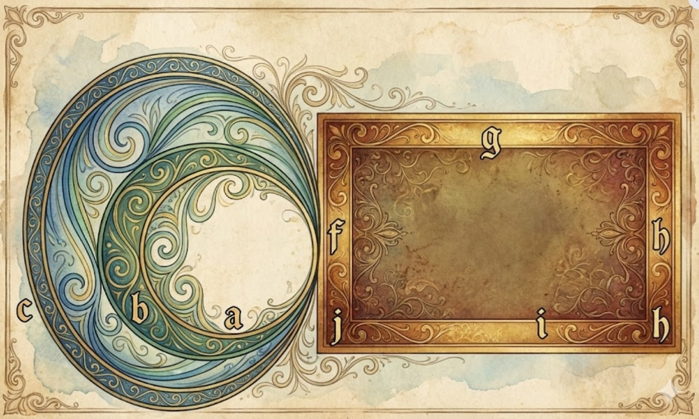

Chapter 1: Ideas In Kabbalah — Section XX
The Physics of Palaces
"The nine palaces are... the nine components of the force-density tensor." — The Stress of Spirit.
View: TENSOR MATRIX. The 9 Components of Divine Will.
The Tensor of Palaces
The nine palaces above the Sephirot correspond to the nine components of the Force-Density Tensor ($T_{ij}$). They are formed by the impact of the lower Sephirot on the Crown (Arich Anpin):
$$
T = \begin{pmatrix}
T_{xx} \text{ (Understanding)} & T_{xy} \text{ (Knowledge)} & T_{xz} \text{ (Wisdom)} \\
T_{yx} \text{ (Power)} & T_{yy} \text{ (Beauty)} & T_{yz} \text{ (Kindness)} \\
T_{zx} \text{ (Splendor)} & T_{zy} \text{ (Foundation)} & T_{zz} \text{ (Eternity)}
\end{pmatrix}
$$
The Physics of Divine Names
These components act as the vessels for the Infinite Light, defined by the equation:
$$ \text{HVHY} = F_{total} = \oint n \cos\theta T ds $$
This links the circular and straight Sephirot, forming the basis of logic and creation.
